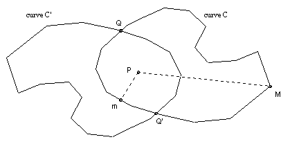
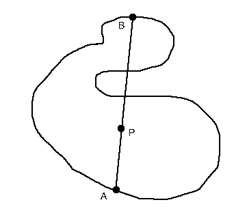
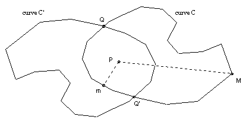

© John Scholes
jscholes@kalva.demon.co.uk
30 Nov 1999
Last corrected/updated 8 Mar 2003

Let P be a point inside a continuous closed curve in the plane which does not intersect itself. Show that we can find two points on the curve whose midpoint is P.
Solution

The solution I put up was as follows:
Take an arbitrary chord AB through P. If P is the midpoint then we are done. So assume it is not. Let A' complete a circuit of the curve starting at A and returning to it. Let the chord through A' and P be A'B'. Let f(A') = A'P/B'P. Then f is a continuous function and f(Astart) = 1/f(Afinish). So for some point C on the curve f must assume the intermediate value 1, which means that P is the midpoint of this chord.
However, that is not quite right if the curve is as illustrated above, since defining A' does not unambiguously define B'. Moreover, we cannot simply move A' around the curve - we may get stuck and have to move it back a little way in order to allow B' to complete a circuit. This can probably be rescued, but there is a neater solution due to P Mason (who also pointed out the error above).
Let C be the curve and C' the curve obtained by rotating C through 180o about P. Let m be a point on C closest to P, and M a point on C furthest from P. Then m must lie inside or on C', and M must lie outside or on C'. Hence C and C' must intersect. Take Q to be any common point. Then the point Q' obtained by rotating Q through 180o must also lie on C and C'. Now P is the midpoint of QQ'.

© John Scholes
jscholes@kalva.demon.co.uk
30 Nov 1999
Last corrected/updated 8 Mar 2003